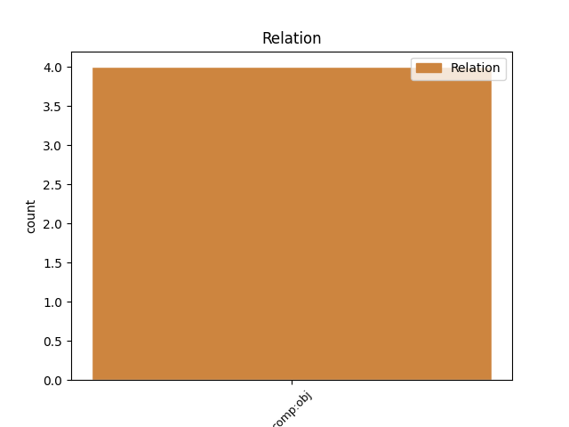
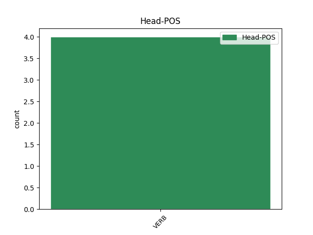
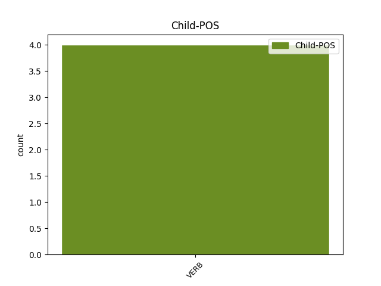

Distribution of features within this leaf



Agreement Rules sorted by frequency.
- When the dependent token is the direct object complements(comp:obj) of the head token, and the head token is VERB
1 Dh’fhaighneachd faighneachd VERB V-s Tense=Past 0 _ _ _
2 i _ _ _ _ 0 _ _ _
3 dha _ _ _ _ 0 _ _ _
4 robh bi VERB V-s--d Tense=Past 1 comp:obj _ _
5 e _ _ _ _ 0 _ _ _
6 feumach _ _ _ _ 0 _ _ _
7 air _ _ _ _ 0 _ _ _
8 biadh _ _ _ _ 0 _ _ _
9 's _ _ _ _ 0 _ _ _
10 thuirt _ _ _ _ 0 _ _ _
11 e _ _ _ _ 0 _ _ _
12 gu _ _ _ _ 0 _ _ _
13 robh _ _ _ _ 0 _ _ _
14 - _ _ _ _ 0 _ _ _
15 gun _ _ _ _ 0 _ _ _
16 tàinig _ _ _ _ 0 _ _ _
17 e _ _ _ _ 0 _ _ _
18 air _ _ _ _ 0 _ _ _
19 astar _ _ _ _ 0 _ _ _
20 fada _ _ _ _ 0 _ _ _
21 's _ _ _ _ 0 _ _ _
22 nach _ _ _ _ 0 _ _ _
23 robh _ _ _ _ 0 _ _ _
24 biadh _ _ _ _ 0 _ _ _
25 'na _ _ _ _ 0 _ _ _
26 chois _ _ _ _ 0 _ _ _
27 . _ _ _ _ 0 _ _ _
Disagree Examples:
1 Tha _ _ _ _ 0 _ _ _
2 sgeulachd _ _ _ _ 0 _ _ _
3 agam _ _ _ _ 0 _ _ _
4 ri _ _ _ _ 0 _ _ _
5 innse _ _ _ _ 0 _ _ _
6 dhuibh _ _ _ _ 0 _ _ _
7 a _ _ _ _ 0 _ _ _
8 nochd _ _ _ _ 0 _ _ _
9 agus _ _ _ _ 0 _ _ _
10 tha _ _ _ _ 0 _ _ _
11 mi _ _ _ _ 0 _ _ _
12 ' _ _ _ _ 0 _ _ _
13 smaoineachadh _ _ _ _ 0 _ _ _
14 gun _ _ _ _ 0 _ _ _
15 creid creid VERB V-f--d Tense=Fut 0 _ _ _
16 sibh _ _ _ _ 0 _ _ _
17 gun _ _ _ _ 0 _ _ _
18 gabhadh _ _ _ _ 0 _ _ _
19 e _ _ _ _ 0 _ _ _
20 tachairt _ _ _ _ 0 _ _ _
21 , _ _ _ _ 0 _ _ _
22 thoradh _ _ _ _ 0 _ _ _
23 àite _ _ _ _ 0 _ _ _
24 sònraichte _ _ _ _ 0 _ _ _
25 bha bi VERB V-s Tense=Past 15 comp:obj _ _
26 'na _ _ _ _ 0 _ _ _
27 bhonn _ _ _ _ 0 _ _ _
28 stéidh _ _ _ _ 0 _ _ _
29 air _ _ _ _ 0 _ _ _
30 an _ _ _ _ 0 _ _ _
31 deach _ _ _ _ 0 _ _ _
32 a _ _ _ _ 0 _ _ _
33 togail _ _ _ _ 0 _ _ _
34 an _ _ _ _ 0 _ _ _
35 toiseach _ _ _ _ 0 _ _ _
36 , _ _ _ _ 0 _ _ _
37 tha _ _ _ _ 0 _ _ _
38 e _ _ _ _ 0 _ _ _
39 ri _ _ _ _ 0 _ _ _
40 fhaicinn _ _ _ _ 0 _ _ _
41 gun _ _ _ _ 0 _ _ _
42 a’ _ _ _ _ 0 _ _ _
43 latha _ _ _ _ 0 _ _ _
44 'n _ _ _ _ 0 _ _ _
45 diugh _ _ _ _ 0 _ _ _
46 : _ _ _ _ 0 _ _ _
47 ged _ _ _ _ 0 _ _ _
48 nach _ _ _ _ 0 _ _ _
49 fhaic _ _ _ _ 0 _ _ _
50 sinn _ _ _ _ 0 _ _ _
51 leis _ _ _ _ 0 _ _ _
52 an _ _ _ _ 0 _ _ _
53 t-sùil _ _ _ _ 0 _ _ _
54 e _ _ _ _ 0 _ _ _
55 no _ _ _ _ 0 _ _ _
56 le _ _ _ _ 0 _ _ _
57 glain'-amhairc _ _ _ _ 0 _ _ _
58 tha _ _ _ _ 0 _ _ _
59 e _ _ _ _ 0 _ _ _
60 ann _ _ _ _ 0 _ _ _
61 - _ _ _ _ 0 _ _ _
62 creag _ _ _ _ 0 _ _ _
63 mhór _ _ _ _ 0 _ _ _
64 àrd _ _ _ _ 0 _ _ _
65 dà _ _ _ _ 0 _ _ _
66 cheud _ _ _ _ 0 _ _ _
67 mìle _ _ _ _ 0 _ _ _
68 muigh _ _ _ _ 0 _ _ _
69 'sa' _ _ _ _ 0 _ _ _
70 Chuan _ _ _ _ 0 _ _ _
71 an _ _ _ _ 0 _ _ _
72 Iar _ _ _ _ 0 _ _ _
73 o _ _ _ _ 0 _ _ _
74 thaobh _ _ _ _ 0 _ _ _
75 an _ _ _ _ 0 _ _ _
76 iar _ _ _ _ 0 _ _ _
77 Uibhist _ _ _ _ 0 _ _ _
78 ris _ _ _ _ 0 _ _ _
79 an _ _ _ _ 0 _ _ _
80 cainte _ _ _ _ 0 _ _ _
81 o _ _ _ _ 0 _ _ _
82 chionn _ _ _ _ 0 _ _ _
83 fada _ _ _ _ 0 _ _ _
84 'sa' _ _ _ _ 0 _ _ _
85 Ghàidhlig _ _ _ _ 0 _ _ _
86 “ _ _ _ _ 0 _ _ _
87 Ròcabarraigh _ _ _ _ 0 _ _ _
88 " _ _ _ _ 0 _ _ _
89 ach _ _ _ _ 0 _ _ _
90 'sa' _ _ _ _ 0 _ _ _
91 chànan _ _ _ _ 0 _ _ _
92 Bheurla _ _ _ _ 0 _ _ _
93 'n _ _ _ _ 0 _ _ _
94 diugh _ _ _ _ 0 _ _ _
95 Rockall _ _ _ _ 0 _ _ _
96 , _ _ _ _ 0 _ _ _
97 ' _ _ _ _ 0 _ _ _
98 ciallachadh _ _ _ _ 0 _ _ _
99 gur _ _ _ _ 0 _ _ _
100 e _ _ _ _ 0 _ _ _
101 stall' _ _ _ _ 0 _ _ _
102 a _ _ _ _ 0 _ _ _
103 th' _ _ _ _ 0 _ _ _
104 ann _ _ _ _ 0 _ _ _
105 uileag _ _ _ _ 0 _ _ _
106 's _ _ _ _ 0 _ _ _
107 nach _ _ _ _ 0 _ _ _
108 eil _ _ _ _ 0 _ _ _
109 feur _ _ _ _ 0 _ _ _
110 idir _ _ _ _ 0 _ _ _
111 orra _ _ _ _ 0 _ _ _
112 . _ _ _ _ 0 _ _ _
1 Innsidh inns VERB V-f Tense=Fut 0 _ _ _
2 Rùnaire _ _ _ _ 0 _ _ _
3 na _ _ _ _ 0 _ _ _
4 Dùthcha _ _ _ _ 0 _ _ _
5 , _ _ _ _ 0 _ _ _
6 Jack _ _ _ _ 0 _ _ _
7 Straw _ _ _ _ 0 _ _ _
8 , _ _ _ _ 0 _ _ _
9 dè _ _ _ _ 0 _ _ _
10 tha bi VERB V-p Tense=Pres 1 comp:obj _ _
11 a' _ _ _ _ 0 _ _ _
12 dol _ _ _ _ 0 _ _ _
13 a _ _ _ _ 0 _ _ _
14 thachairt _ _ _ _ 0 _ _ _
15 feasgar _ _ _ _ 0 _ _ _
16 ann _ _ _ _ 0 _ _ _
17 an _ _ _ _ 0 _ _ _
18 Taigh _ _ _ _ 0 _ _ _
19 nan _ _ _ _ 0 _ _ _
20 Cumantan _ _ _ _ 0 _ _ _
21 . _ _ _ _ 0 _ _ _
1 Innsidh inns VERB V-f Tense=Fut 0 _ _ _
2 an _ _ _ _ 0 _ _ _
3 riaghaltas _ _ _ _ 0 _ _ _
4 an-diugh _ _ _ _ 0 _ _ _
5 fhathast _ _ _ _ 0 _ _ _
6 dè _ _ _ _ 0 _ _ _
7 tha bi VERB V-p Tense=Pres 1 comp:obj _ _
8 iad _ _ _ _ 0 _ _ _
9 am _ _ _ _ 0 _ _ _
10 beachd _ _ _ _ 0 _ _ _
11 a _ _ _ _ 0 _ _ _
12 dhèanamh _ _ _ _ 0 _ _ _
13 mu _ _ _ _ 0 _ _ _
14 chìsean _ _ _ _ 0 _ _ _
15 drochaid _ _ _ _ 0 _ _ _
16 an _ _ _ _ 0 _ _ _
17 Eilein _ _ _ _ 0 _ _ _
18 Sgitheanaich _ _ _ _ 0 _ _ _
19 . _ _ _ _ 0 _ _ _